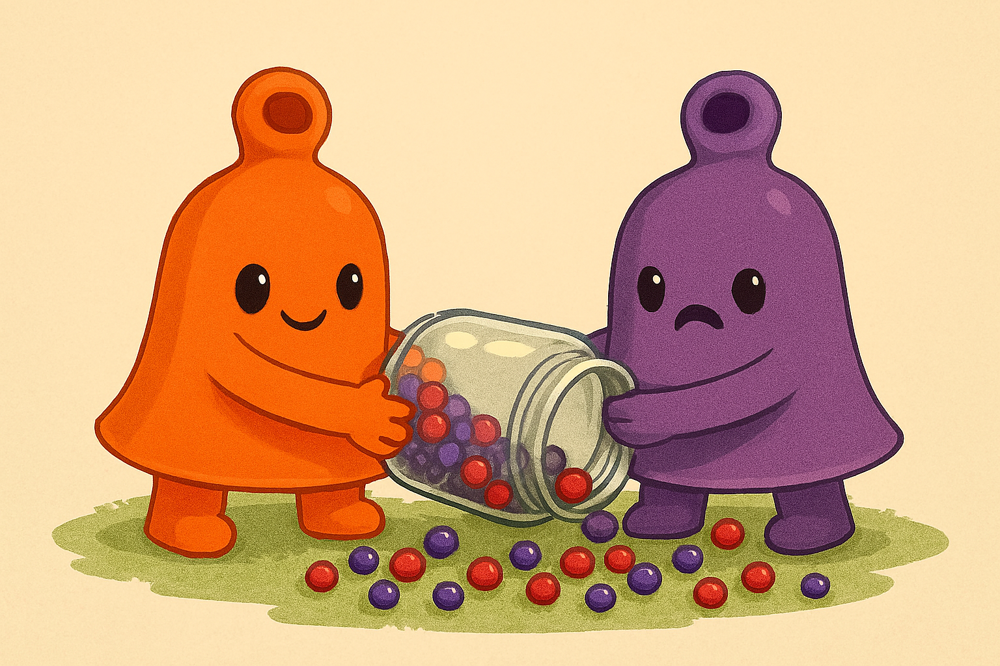
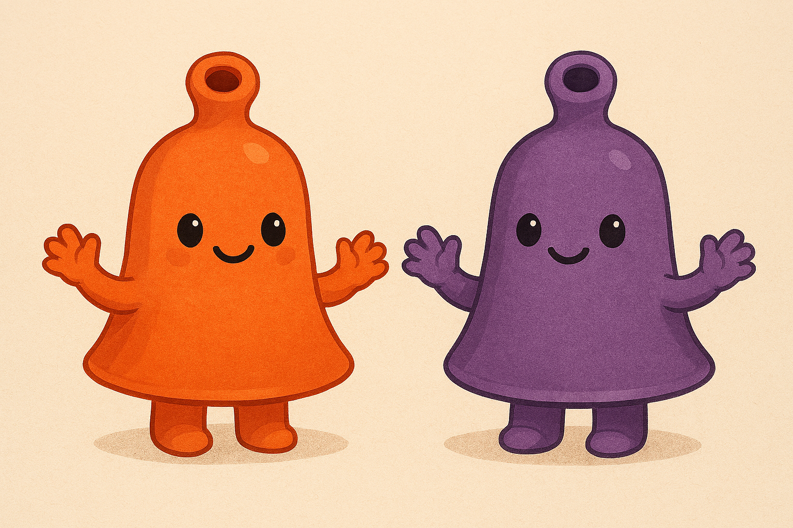

BellTots.
In the heart of the Bellburrow, Crimblin had found a jar of jingleberries. He wasn’t supposed to open it, but the jingles were so tempting—each one giggled when shaken. “Just one shake,” he whispered. But the jar burst open, and the jingles flew everywhere, bouncing off shelves, tickling scrolls, and waking the sleepy Belltots from their nap.


Instead of scolding, the Belltots gathered the jingles together, each one humming a different tune. They made a new mix—The Jingle Jar Mix-Up—and danced until the moon giggled too.
Moral: Sharing isn’t just fair—it makes things more magical.